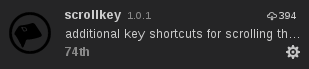
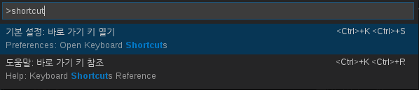
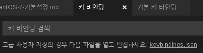
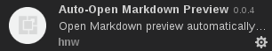
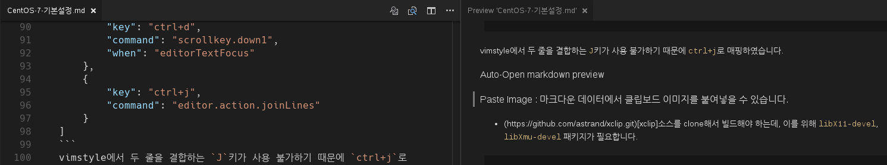
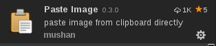
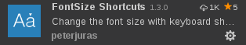

유틸리티 설치
구글 크롬 설치
Shutter(뛰어난 화면 캡쳐 유틸) 설치
|
|
- 로그인 시 실행 / 시작시 숨김을 설정하는 것을 추천합니다.
Terminator(다중 분할 터미널 설치)
- TODO 설치 가이드 작성 필요…
개발 환경 셋업
|
|
Hack 폰트 설치
소스에서 최신 git 빌드하기
- 필요한 라이브러리
|
|
python 3.5 설치
vscode 설치
기본 환경 셋팅
|
|
필수 확장 설치
- python
옵션 확장 설치
vimStyle
vim 을 좋아한다면 추천!

옵션: scrollkey

ctrl+d / ctrl+u 로 페이지 넘기기 위해 필요합니다. 설치후 다음과 같이 shortcut 설정으로 이동한 뒤

keybinding.json 을 열고

다음 설정을 추가합시다.
vimstyle에서 두 줄을 결합하는 J키가 사용 불가하기 때문에 ctrl+j로 매핑하였습니다.
Auto-Open markdown preview

Markdown파일을 열면 아래처럼 자동으로 프리뷰 화면 띄워줘서 편리합니다.

Paste Image : 마크다운 데이터에서 클립보드 이미지를 붙여넣을 수 있습니다.

xclip소스를 clone해서 빌드해야 하는데, 이를 위해 libX11-devel, libXmu-devel 패키지가 필요합니다.
- 설치 후, 환경설정을 열어 저장될 폴더를 지정하는 것이 좋습니다.
fontsize shortcut

ctrl+'+' 키와 ctrl+'-; 키로 글씨 크기 조절을 할 수 있습니다.
npm 설치
- http://nodejs.org 에서 current 버전을 다운받습니다.
- 이 문서에서는 7.8.0 버전 으로 작업했습니다.
- 압축을 푼 뒤 다음과 같이
/usr/local밑에 복사합니다.node란 명령이 실행되면 잘 설치 된 것입니다.1234$ tar xvf node-v7.8.0-linux-x64.tar.xz$ cp -rf node-v7.8.0-linux-x64/* /usr/local/$ node -vv7.8.0